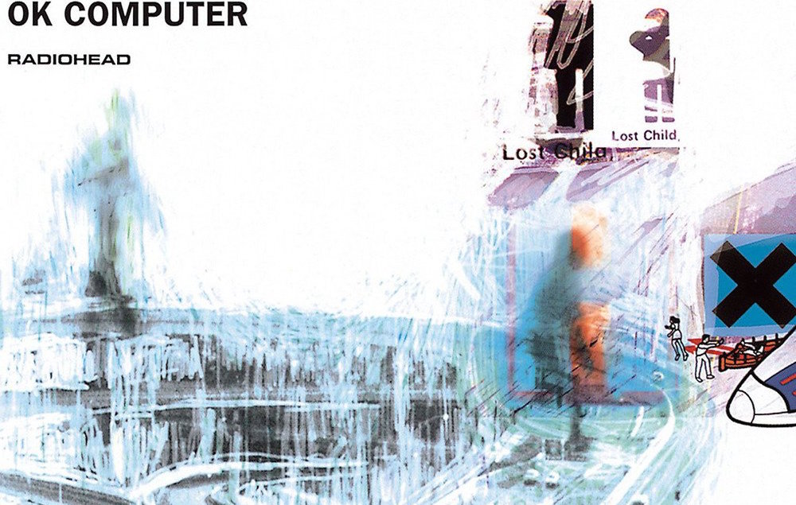

OK Computer by Radiohead

Ingredients
- Complex Imagery
- Fire-Breathing, yet Passive Lyrics
- Thought provoking melodies
Steps
- Start off with a schizophrenic atmosphere with Paranoid Android
- Mix in the melancholic chord progressions of Exit Music (For A Film)
- Add some drops of the timeless classic Karma Police
- Garnish with The Tourist
Back to the index...